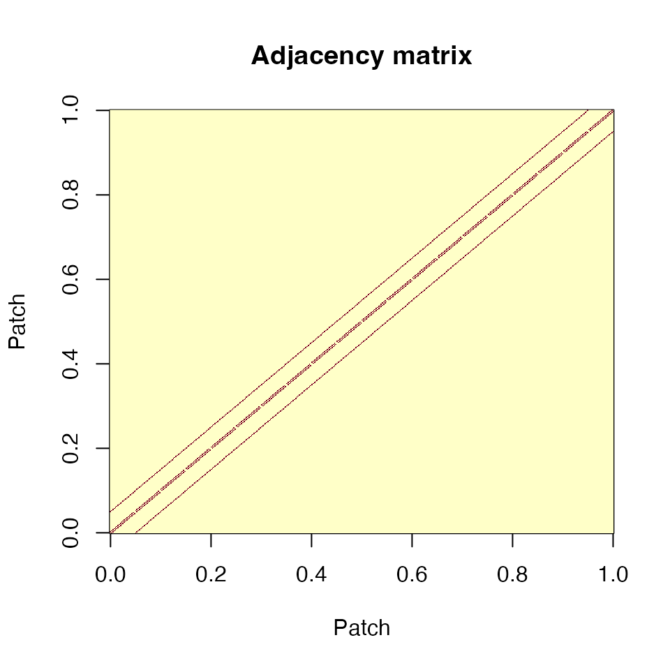
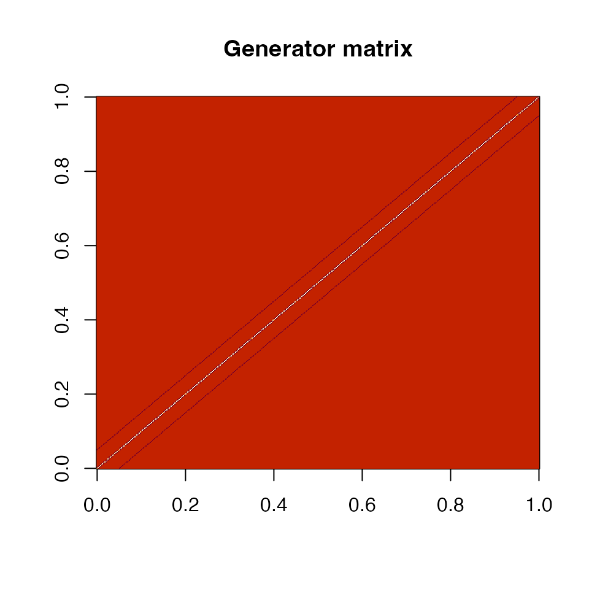
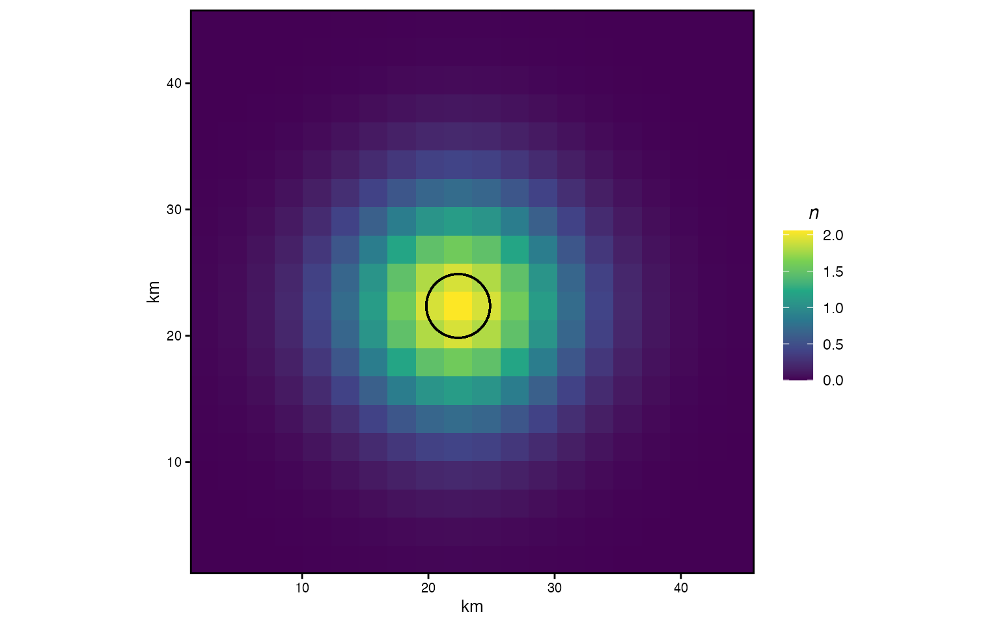
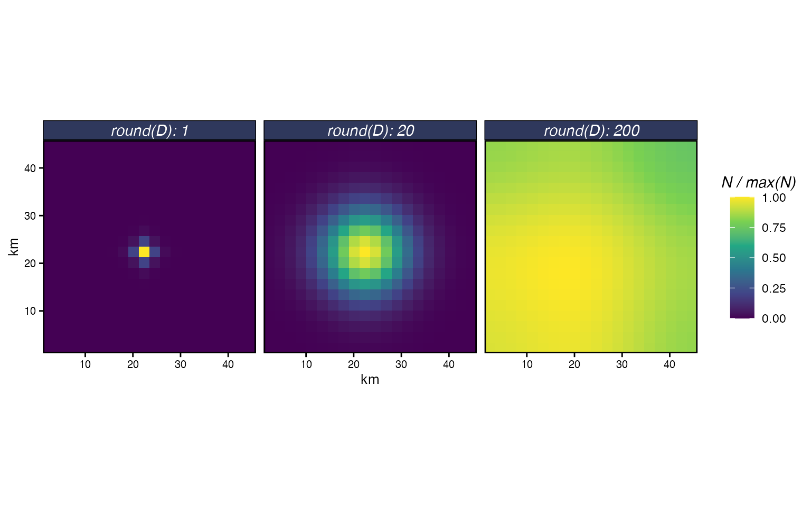
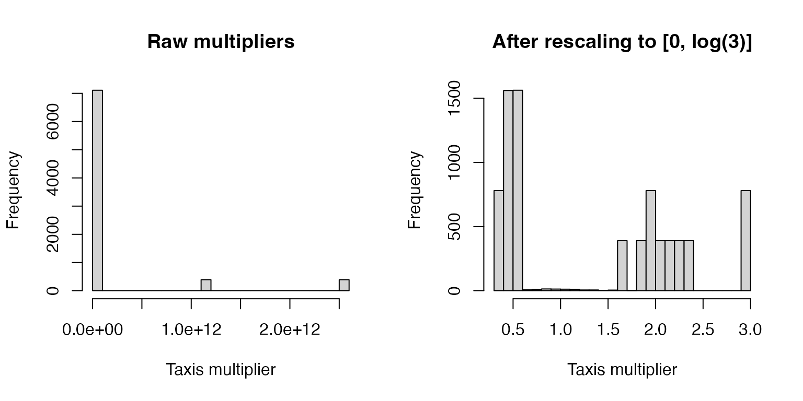
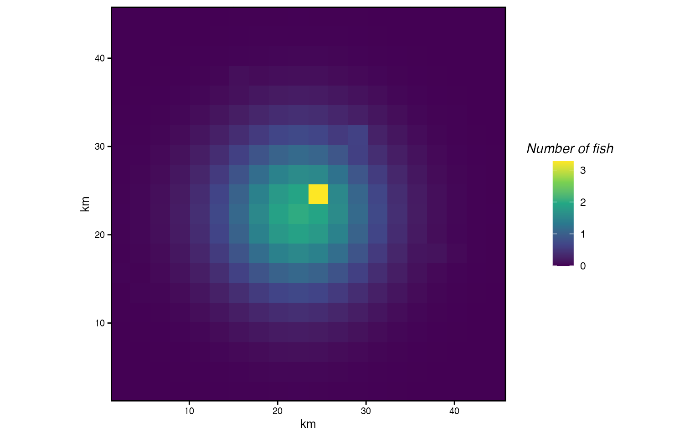
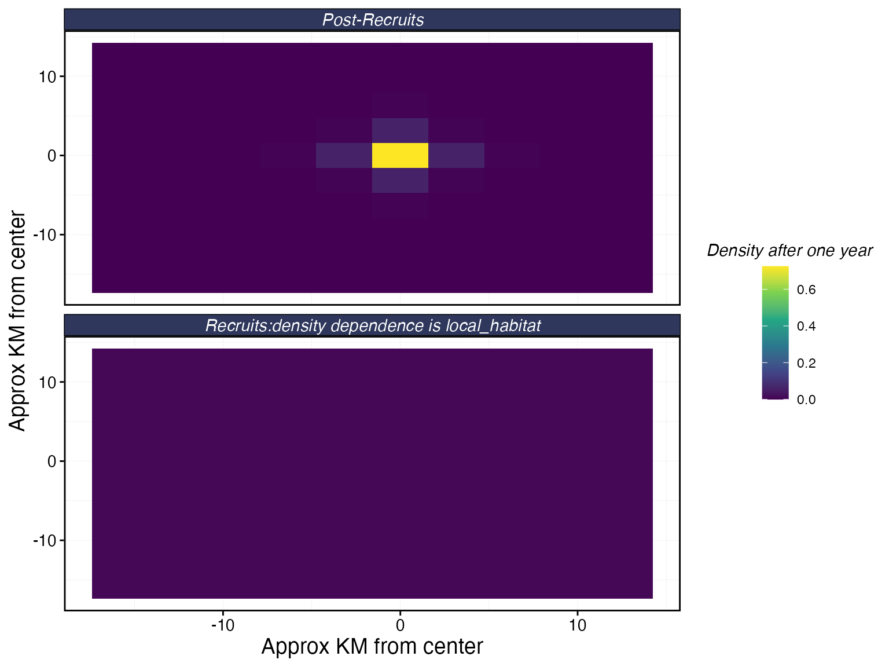
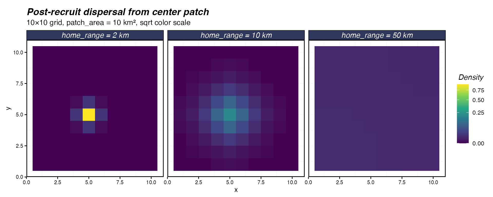

Movement: From CTMC Theory to Home Range
Source:vignettes/articles/movement-rates.Rmd
movement-rates.RmdMovement is central to how marlin connects spatial
population dynamics to fishing fleets and management. Species that move
little stay where they are protected (or fished); species that move a
lot redistribute biomass across the domain. Getting the movement model
right — and understanding what its parameters mean — is essential for
interpreting simulation results.
marlin’s movement dynamics are based on a
continuous-time Markov chain (CTMC), as described in Thorson
et al. (2021). The CTMC framework decomposes movement into three
components: advection (drifting with currents), taxis
(active movement towards preferred habitat), and diffusion
(undirected random movement). marlin currently implements
diffusion and taxis, with advection set to zero. This allows the model
to represent anything from a simple Gaussian dispersal kernel (diffusion
only) to directed movement towards dynamic habitat (diffusion +
taxis).
This vignette walks through the math behind the CTMC model, builds up
the movement matrices by hand so you can see what’s happening, and then
shows how adult_home_range wraps it all into a single
user-facing parameter.
The CTMC Movement Model
Movement of individuals from each patch to every other patch in a given time step , for life stage of species , is described by a movement matrix . This matrix is constructed from a diffusion rate and a habitat preference function , scaled by the width of the time step and the length of a patch edge .
The individual elements of the instantaneous movement (generator) matrix are:
The off-diagonal entries are the instantaneous rates of movement between adjacent patches. They are always non-negative (a requirement of the CTMC), because the habitat difference enters through an exponential. The diagonal is set so that each row sums to zero, ensuring conservation of individuals.
The actual movement of individuals over a discrete time step is then computed via the matrix exponential:
where is the vector of abundances across patches. The matrix exponential converts instantaneous rates into discrete-time transition probabilities.
This parameterization is “scale free”: the diffusion rate (in units of km²/year) is a biological property of the species that does not depend on the resolution or time step of the simulation. The scaling translates into the correct units for whatever grid and time step the user has chosen. This means you can set for a species once and then run simulations at any spatial or temporal resolution without changing the movement parameterization.
Physical barriers
marlin allows land or other physical barriers to be
included in the grid. Pairs of patches where one or both are barriers
are treated as non-adjacent (their entry in the adjacency matrix is
zero). The CTMC then produces movement that routes around barriers
rather than through them. This is distinct from setting habitat quality
to zero: an animal won’t prefer a zero-habitat patch, but can
still transit through it. A barrier, in contrast, is impassable.
Diffusion from First Principles
To build intuition, let’s step through the calculations manually
rather than using marlin’s internal machinery. We set up a
20×20 grid with 5 km² patches (patch edge
2.24 km), an annual time step, and a diffusion rate
of 20 km²/year.
resolution <- 20
patches <- resolution^2
delta_d <- sqrt(5) # patch edge in km
patch_area <- delta_d^2 # 5 km² per patch
delta_t <- 1 # annual time step
D <- 4 * patch_area # 20 km²/year
grid <- expand_grid(x = 1:resolution, y = 1:resolution)The first step is constructing the adjacency matrix: a matrix where entry if patches and share an edge, and 0 otherwise.
adjacent <- grid |>
dist() |>
as.matrix()
adjacent[adjacent != 1] <- 0
image(adjacent, main = "Adjacency matrix", xlab = "Patch", ylab = "Patch")
Adjacency matrix for a 20×20 grid. Each patch connects to its 4 cardinal neighbors (or fewer at edges).
We fill in the instantaneous diffusion matrix by multiplying adjacency by , then setting the diagonal so rows sum to zero. This is the generator matrix of the CTMC — it describes rates of movement, not probabilities.
diffusion_matrix <- adjacent * D * (delta_t / delta_d^2)
diag(diffusion_matrix) <- -colSums(diffusion_matrix)
diffusion_matrix <- as.matrix(diffusion_matrix)
image(diffusion_matrix, main = "Generator matrix")
Generator (instantaneous rate) matrix. Negative diagonal entries (blue) balance the positive off-diagonal rates.
Now we seed 100 individuals in the center patch and apply the matrix exponential to compute their distribution after one time step. The circle shows , a rough radius enclosing the bulk of the diffused population.
n <- rep(0, patches)
n[grid$x == resolution / 2 & grid$y == resolution / 2] <- 100
n_next <- as.numeric(n %*% expm::expm(diffusion_matrix))
radius <- sqrt(D / pi)
grid$n <- n_next
grid |>
ggplot() +
geom_tile(aes(x * delta_d, y * delta_d, fill = n)) +
geom_circle(aes(
x0 = resolution / 2 * delta_d,
y0 = resolution / 2 * delta_d,
r = radius
)) +
scale_fill_viridis_c(limits = c(0, NA)) +
scale_x_continuous(name = "km", expand = c(0, 0)) +
scale_y_continuous(name = "km", expand = c(0, 0)) +
coord_fixed()
Diffusion from a central patch after one year. Circle shows r = sqrt(D/π).
How diffusion rate shapes dispersal
The diffusion rate controls how quickly individuals spread. Small values produce tight clusters around the origin; large values spread individuals across the domain. To see this, we simulate diffusion from a center patch across a range of values.
sim_diffusion <- function(D, resolution, delta_d, delta_t = 1) {
patches <- resolution^2
patch_area <- delta_d^2
grid <- expand_grid(x = 1:resolution, y = 1:resolution)
adjacent <- grid |> dist() |> as.matrix()
adjacent[adjacent != 1] <- 0
diff_mat <- adjacent * D * (delta_t / delta_d^2)
diag(diff_mat) <- -colSums(diff_mat)
n <- rep(0, patches)
n[grid$x == resolution / 2 & grid$y == resolution / 2] <- 100
grid$n <- as.numeric(n %*% expm::expm(as.matrix(diff_mat)))
grid
}
diffusion_frame <- tibble(D = c(1, 20, 200)) |>
mutate(result = map(D, sim_diffusion, resolution = resolution, delta_d = delta_d))
diffusion_frame |>
unnest(result) |>
group_by(D) |>
mutate(n = n / max(n)) |>
ggplot() +
geom_tile(aes(x * delta_d, y * delta_d, fill = n)) +
scale_fill_viridis_c("N / max(N)", limits = c(0, NA)) +
scale_x_continuous(name = "km", expand = c(0, 0)) +
scale_y_continuous(name = "km", expand = c(0, 0)) +
coord_fixed() +
facet_wrap(~round(D), labeller = label_both)
Diffusion from a central patch after one year for three diffusion rates. Colour is scaled to the maximum density within each panel.
Adding Habitat Preference through Taxis
Pure diffusion spreads individuals symmetrically. In reality, animals move towards preferred habitat. The CTMC model captures this through the taxis component: the habitat difference between adjacent patches enters the generator as an exponential multiplier of the diffusion rate.
This parameterization guarantees that the off-diagonal elements of the generator remain non-negative (a CTMC requirement), because for all . It also makes the scale of the habitat gradient intuitive: the exponentiated difference acts as a multiplier of . If , the rate of movement from to is three times the base diffusion rate.
The practical implication is that the absolute values of the habitat layer matter less than the range of differences. When generating simulated habitat, you should think about what multiplier of makes biological sense. A scallop with km²/year shouldn’t have a habitat gradient that produces taxis multipliers of . A useful trick is to rescale your habitat surface so that the maximum difference produces a sensible multiplier.
# Generate arbitrary habitat
set.seed(123)
habitat <- rep(0, patches)
habitat[sample(patches, 10)] <- rnorm(10, D, 5)
# Raw differences can be extreme
habitat_diff_raw <- outer(habitat, habitat, "-")
# Rescale so max taxis multiplier is 3x diffusion
new_habitat <- scales::rescale(habitat, to = c(0, log(3)))
habitat_multiplier <- exp(outer(new_habitat, new_habitat, "-"))
par(mfrow = c(1, 2))
hist(exp(habitat_diff_raw[habitat_diff_raw != 0]),
main = "Raw multipliers", xlab = "Taxis multiplier", breaks = 30)
hist(habitat_multiplier[habitat_multiplier != 1],
main = "After rescaling to [0, log(3)]", xlab = "Taxis multiplier", breaks = 30)
Histogram of habitat-difference multipliers before and after rescaling. The raw gradient produces multipliers spanning orders of magnitude; rescaling to [0, log(3)] caps the maximum multiplier at 3.
Note that this kind of ad-hoc rescaling distorts the ratios of the original habitat gradient. It’s fine for generating synthetic habitats for simulation, but you should not rescale habitat gradients estimated from an empirical CTMC model — those are already on the right scale.
Combined diffusion + taxis
With both components in hand, the full generator matrix is:
movement_matrix <- adjacent * ((D * delta_t / delta_d^2) *
exp((delta_t * outer(new_habitat, new_habitat, "-")) / delta_d))
diag(movement_matrix) <- -colSums(movement_matrix)
grid$n <- as.numeric(expm::expm(as.matrix(movement_matrix)) %*% n)
grid |>
ggplot() +
geom_tile(aes(x * delta_d, y * delta_d, fill = n)) +
scale_fill_viridis_c(name = "Number of fish", limits = c(0, NA)) +
scale_x_continuous(name = "km", expand = c(0, 0)) +
scale_y_continuous(name = "km", expand = c(0, 0)) +
coord_fixed()
Distribution after one year under diffusion + taxis. Animals concentrate near high-habitat patches rather than spreading symmetrically.
The distribution is no longer symmetric. Individuals concentrate near the high-habitat patches, pulled by taxis, while diffusion still spreads them into surrounding areas.
From Diffusion Rate to Home Range
The CTMC math operates in terms of (km²/year), which is precise but not always intuitive. Most ecologists think about movement in terms of home range: the area (or linear distance) within which an animal an animal might travel within a given span of time.
marlin bridges this gap with
adult_home_range and recruit_home_range. When
you supply a home range in km, tune_diffusion finds the
diffusion rate
that produces the corresponding movement pattern. Specifically, it
defines home range as the linear distance from a starting patch within
which 95% of individuals remain after one year.
tune_diffusion solves for the
that places exactly 5% of individuals beyond that distance.
# See the mapping from home range to diffusion rate
home_ranges <- c(1, 5, 10, 25, 50, 100)
hr_to_D <- tibble(
home_range_km = home_ranges,
D_km2_yr = map_dbl(home_ranges, tune_diffusion)
)
knitr::kable(hr_to_D, digits = 2,
col.names = c("Home range (km)", "D (km²/year)"),
caption = "Diffusion rates derived by tune_diffusion for a range of home ranges.")| Home range (km) | D (km²/year) |
|---|---|
| 1 | 0.05 |
| 5 | 1.32 |
| 10 | 5.27 |
| 25 | 32.93 |
| 50 | 131.70 |
| 100 | 526.81 |
The relationship is nonlinear: doubling the home range more than doubles , because diffusion spreads in two dimensions.
Using home range in practice
In practice, you never need to think about
directly. The adult_home_range argument to
create_critter calls tune_diffusion internally
and builds the full CTMC movement matrix — including the adjacency
structure, patch area scaling, taxis from habitat, and the matrix
exponential — automatically.
The built-in plot_movement method shows the resulting
dispersal pattern: starting from a single individual in the center
patch, it displays the density after one year for both post-recruits and
recruits (which can have different home ranges).
fauna <- list(
"bigeye" = create_critter(
common_name = "bigeye tuna",
adult_home_range = 4,
density_dependence = "local_habitat",
seasons = 1,
fished_depletion = 0.25,
resolution = c(10, 10),
patch_area = 10,
steepness = 0.6,
ssb0 = 42,
m = 0.4
)
)
fauna$bigeye$plot_movement()
Movement patterns for bigeye tuna with a 4 km adult home range. Top panel: post-recruit dispersal after one year. Bottom panel: recruit dispersal, governed by recruit_home_range and the density dependence form.
With adult_home_range = 4 and
patch_area = 10 (patch edge
3.2 km), the home range spans just over one patch width. Most
individuals stay in or very near their starting patch — appropriate for
a species with limited post-recruit movement at this spatial scale.
Comparing home ranges
To see how home range affects the spatial dynamics, let’s create the same species with three different adult home ranges and compare their dispersal footprints.
compare_hr <- function(hr) {
f <- list(
"species" = create_critter(
common_name = "bigeye tuna",
adult_home_range = hr,
density_dependence = "local_habitat",
seasons = 1,
fished_depletion = 0.25,
resolution = c(10, 10),
patch_area = 10,
steepness = 0.6,
ssb0 = 42,
m = 0.4
)
)
# Extract the movement matrix and simulate dispersal from center
res <- c(10, 10)
g <- expand_grid(x = 1:res[1], y = 1:res[2])
center <- which(g$x == 5 & g$y == 5)
n_start <- rep(0, prod(res))
n_start[center] <- 1
# Apply the movement matrix (already exponentiated inside create_critter)
move_mat <- f$species$movement_matrix[[1]]
n_end <- as.numeric(move_mat %*% n_start)
g |> mutate(density = n_end, home_range = hr)
}
hr_comparison <- map_dfr(c(2, 10, 50), compare_hr)
hr_comparison |>
mutate(label = paste0("home_range = ", home_range, " km")) |>
mutate(label = fct_relevel(label, "home_range = 2 km", "home_range = 20 km")) |>
ggplot(aes(x, y, fill = density)) +
geom_tile() +
scale_fill_viridis_c("Density", limits = c(0, NA), trans = "sqrt") +
coord_equal() +
facet_wrap(~label) +
labs(title = "Post-recruit dispersal from center patch",
subtitle = "10×10 grid, patch_area = 10 km², sqrt color scale")
Post-recruit dispersal from a center patch after one year for three adult home ranges on a 10×10 grid with 10 km² patches.
At 2 km, movement is essentially zero — the individual stays put. At 10 km (about 3 patch widths), there is meaningful spread to neighboring patches. At 50 km, probability mass is distributed across the entire domain.
Summary
The movement system in marlin has three layers:
The CTMC math: a generator matrix built from diffusion () and taxis (habitat gradients), converted to transition probabilities via matrix exponentiation. This is “scale free” — doesn’t depend on grid resolution or time step.
tune_diffusion: converts a biologically interpretable home range (km) into the corresponding (km²/year) by finding the diffusion rate that keeps 95% of individuals within the specified distance after one year.adult_home_range/recruit_home_range: the user-facing parameters increate_critter. These calltune_diffusioninternally, build the full movement matrix with taxis from the supplied habitat layers, and store the result for use bysimmar.
For most applications, you only need to think about layer 3: set a
home range in km and let marlin handle the rest. The
underlying CTMC math is there when you need it — for instance, if you
have empirical estimates of
from a tagging study, you can supply adult_diffusion
directly instead of adult_home_range.
Next Steps
- Simulating Large Spatial Extents — how movement matrix sparsity scales with home range and grid size
- Set Dynamic Habitats — seasonal habitat shifts that change the taxis component over time
-
Recruitment, Dispersal, and MPA
Performance — how
recruit_home_rangeinteracts with density dependence forms